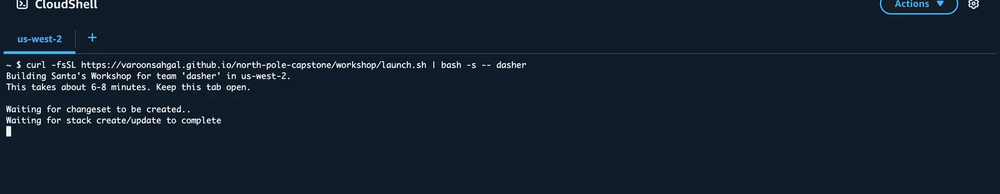
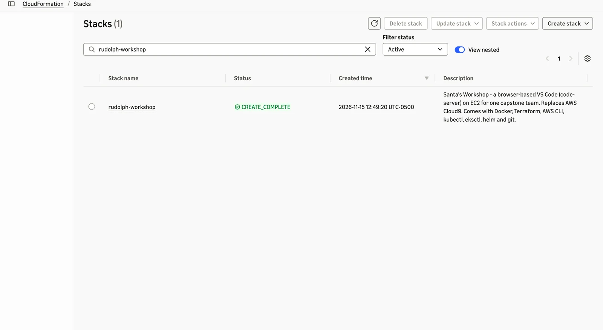
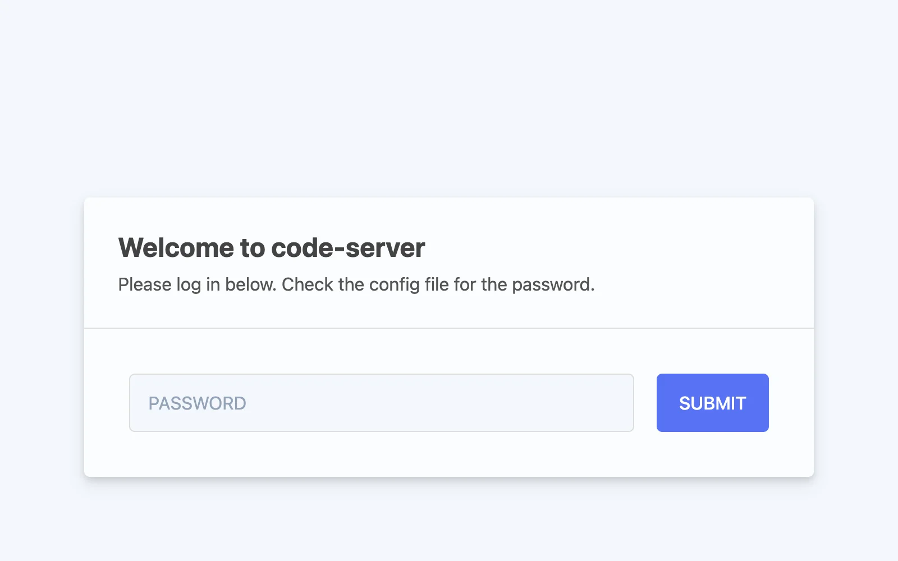
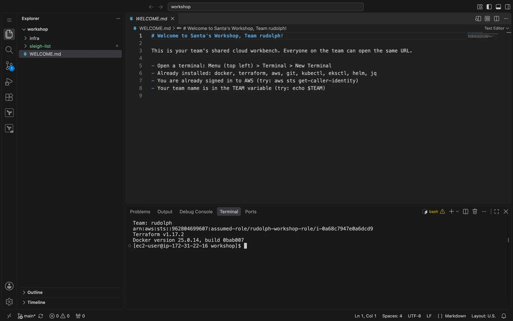

Your team's shared development machine: VS Code in a browser tab, with Docker, Terraform and the AWS tools ready to use.
AWS Cloud9 is retired for new customers, so this course uses its own replacement. One command creates all of this for your team:
| Already installed | Good to know |
|---|---|
| Docker, Terraform, AWS CLI, git, kubectl, eksctl, helm, jq | The server is a t3.large with a 40 GB disk, running Amazon Linux 2023. |
The variable $TEAM holds your team name | The region is already set to us-west-2. |
| AWS credentials (through the server's role) | There are no access keys on the machine, and you should not add any. |
One person per team does this, once.
>_) in the top bar.

curl -fsSL https://varoonsahgal.github.io/north-pole-capstone/workshop/launch.sh | bash -s -- [[TEAM]]It downloads a small script that asks CloudFormation (AWS's own infrastructure-as-code service) to build a stack named [[TEAM]]-workshop. You can watch it in the CloudFormation console. Running the command a second time is safe: it just prints the URL and password again.



If something in the workshop listens on a port (for example a container started with -p 3000:3000), you can open it in your browser. Take your workshop address up to .cloudfront.net and add /proxy/3000/, including the final slash.
Run the launch command again in CloudShell. It will not build anything new. It just prints them again. The password is also stored in Secrets Manager as [[TEAM]]-workshop-password.
Read the last lines of the output. If it mentions a stack in ROLLBACK_COMPLETE, open CloudFormation, select [[TEAM]]-workshop, look at the Events tab for the first red line, then delete the stack and run the command again. If it says the region is wrong, switch the console to Oregon and open CloudShell again.
Check the address starts with https:// and ends in .cloudfront.net (plus the folder part). Some company networks block WebSockets. Try another browser, or disconnect from the VPN and try again. Tell your instructor if it persists.
The first time you paste, the browser asks for permission to read your clipboard. Choose Allow. You can also right-click and choose Paste, or use Ctrl + Shift + V.
Docker images pile up. Free the space with docker system prune -af and check with df -h /.
Open a new terminal. If that does not help, the setup may not have finished. Ask your instructor to check /var/log/workshop-setup.log on the server.
Only when your instructor says both missions are over. From CloudShell:
aws cloudformation delete-stack --stack-name [[TEAM]]-workshop --region us-west-2This deletes the server and every file on it. Anything not pushed to GitHub is gone. Destroy your Terraform resources first, because the state file for Mission 1 lives on this server. See the cleanup guide.